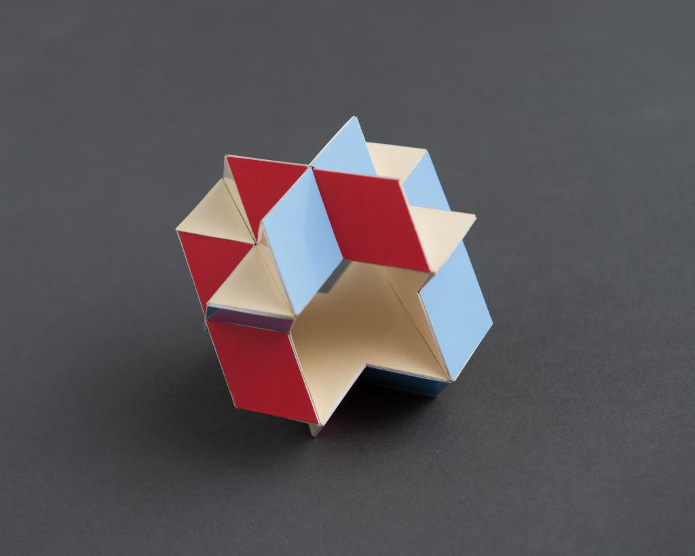
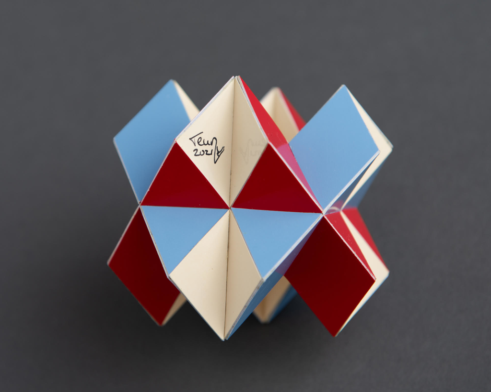

Four-Fold Toro Crosso

This polyhedron is a toroidal crossohedron. It consists of four crosses that can be seen as 5 edge-to-edge connected squares, 16 equilateral triangles and 16 rhombs. The rhombs consist of 2 edge-to-edge connected equilateral triangles, which means that this toroid would have been part of Steward's toroids [BStew01] if not for the aplanar (A) rule. This polyhedron was found by Don Romano in 2021.
The model was built in 2021 and the smaller edge length is 2.5 cm (1 inch), which gives it a height of 7 cm (2.8 inch). It surprised me that it is very rigid, but the rhombs prevent the square shaped tunnel to be deformed, of course. I started to build the tunnel first and because of that it felt I had to finish the model four times.
As the picture below shows the model seems to exist of 'M's and 'W's. One could use it to honour Magnus Wenninger with a crown.

Copyright of pictures by PhotoArt Studio Hörby
Links
References
[BStew01] Steward, B. M: Adventures among the Toroids, Malloy Lithographing, Inc.; 2nd edition 1964Last Updated
2021-04-21